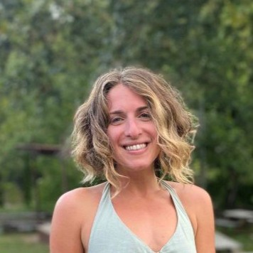
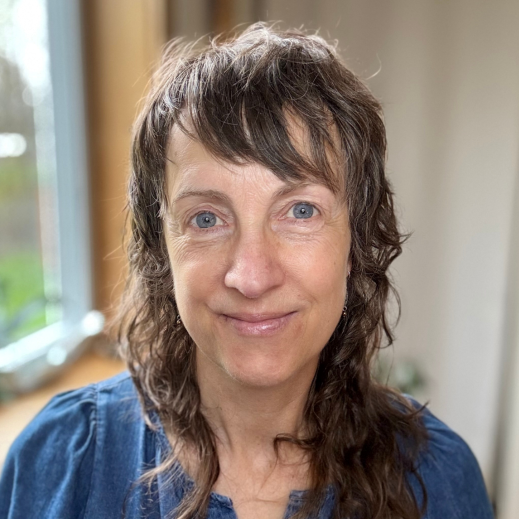
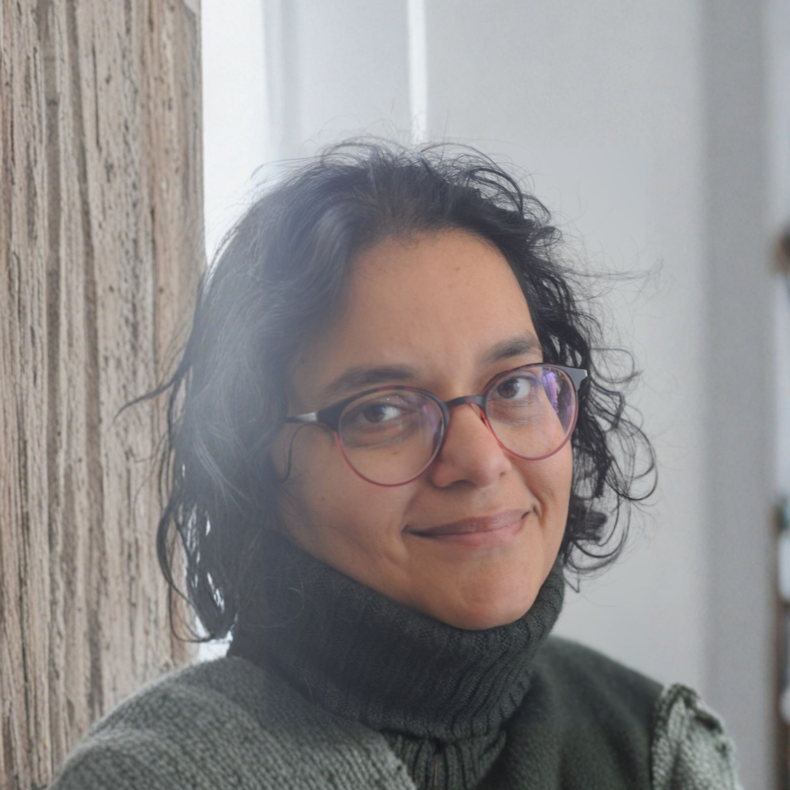
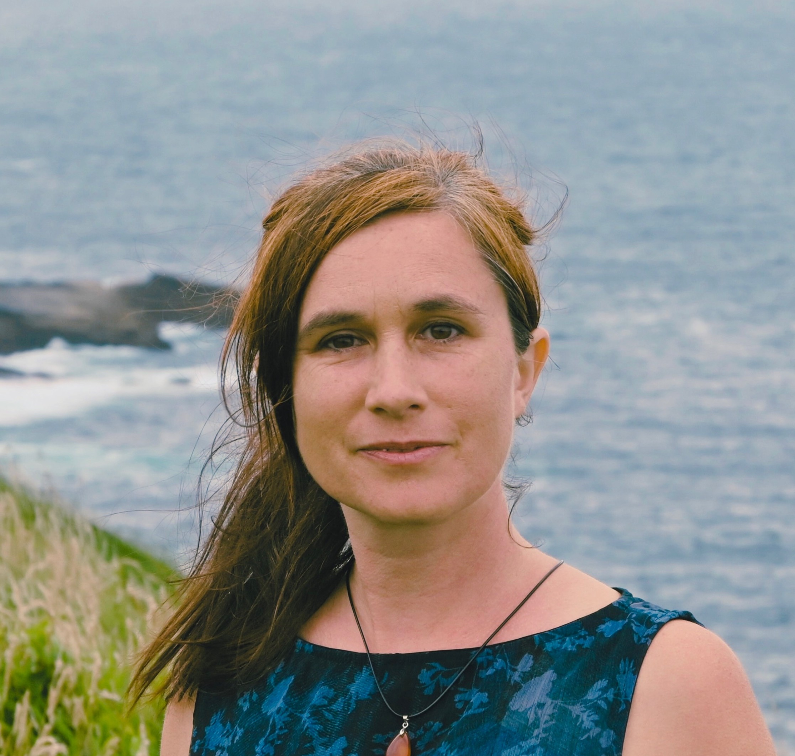
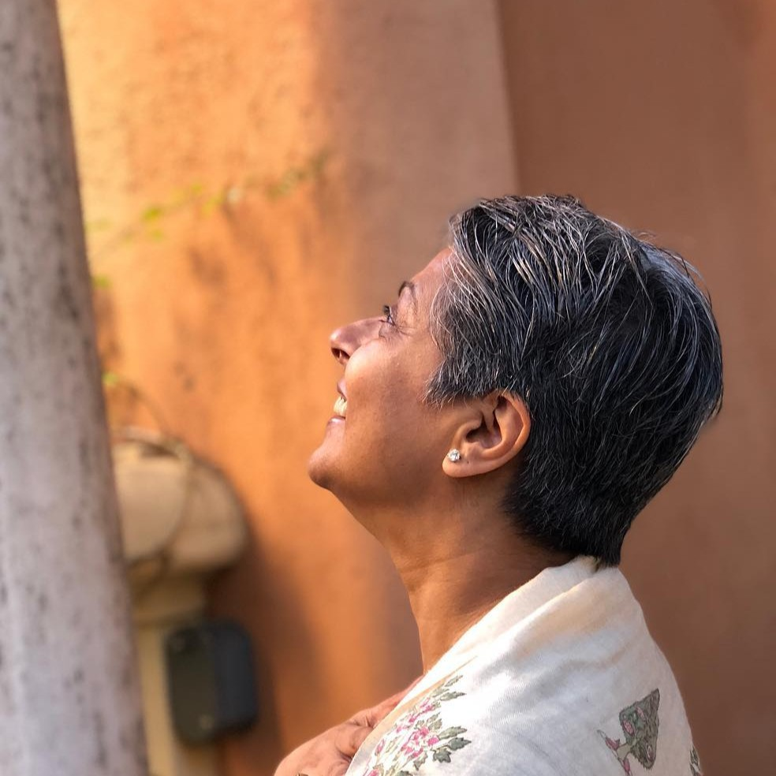
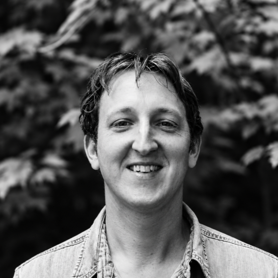

Your weekend path to go from drained to dreaming again
Visual Schedule + Practitioners
Opening Night
Friday · June 19
Eastern Time
4:00 PM ET
Opening Session + Tech Support
Event Host, Erica Leib opens our 4-day event with a few words, gentle movement, and room for you to ask questions. Co-Host Fi will provide tech troubleshooting and support for any guests with accessibility needs.

Led by
Erica Leib (with Co-Host Fi)
Event Host & Somatic Space Holder
⎈ ❖ ☼
Starts 6:00 AM Pacific · On the hour
Saturday · June 20
Pacific Time
5:00 PM ET
Channeled Messages from Earth + Spiritual Grounding
Brenda shares channeled messages from Earth for the collective, offering intuitive guidance for reconnecting with steadiness, belonging, and a sense of being supported by something larger than your stress. This opening session supports grounding, spiritual reflection, emotional healing, nature-based wisdom, and nervous system calming for anyone arriving depleted, overwhelmed, or energetically sensitive.
Lance creates a live guitar soundscape and guided meditation for rejuvenation, emotional release, rest, and nervous system support. This session is designed for people searching for sound healing, meditation music, stress relief, nervous system regulation, guided relaxation, and a gentle way to begin the day without forcing yourself to be “on.”
Susan teaches how to use art and doodling as a reflection practice through neurographics. You do not need to be an artist. This session supports creative reflection, emotional processing, mindfulness, art journaling, stress relief, self-awareness, and a hands-on way to move stuck thoughts out of your head and onto the page.

Led by
Susan Tutt
Art Therapist & Creative Reflection Facilitator
⎈ ❖ ☼
8:00 AM PT
Introduction to Meditation
Emotional Suffering · Mind Racing · Inner Peace · Awaken Spiritually
Srishti offers meditation practices for softening self-criticism, interrupting overthinking, and relating to yourself with more kindness. This beginner-friendly meditation session supports burnout recovery, anxiety support, self-compassion, mental clarity, emotional regulation, and people who want to meditate but often feel too restless, tired, or distracted to begin.

Led by
Srishti Vadini
Meditation Teacher & Self-Compassion Mentor
⎈ ❖ ☼
9:00 AM PT
Tarot for Clarity + Reflection
Feeling Stuck · Relationship Anxiety · Career Crossroads · Tarot · Energy Reading
Matt offers tarot as a reflective practice for emotional honesty, decision fatigue, intuition, and asking better questions. This is not about predicting your life. It is about using tarot for self-awareness, spiritual guidance, creative reflection, inner clarity, and reconnecting with what you already know when stress has made your inner world feel noisy or numb.
Mauricio introduces Nichiren Buddhist chanting and bells as a rhythmic practice for de-stressing, focus, breath, grounding, and embodied calm. This session supports people curious about Buddhist chanting, mantra practice, meditation, spiritual focus, sound, and accessible tools for returning to steadiness when the mind is scattered or overwhelmed.
Led by
Mauricio Jimenez
Buddhist Practitioner & Mindfulness Guide
⎈ ❖ ☼
Converted from Pacific Time
Sunday · June 21
Eastern Time
10:00 AM ET
Global Dread · Climate Doom · Political Exhaustion · Social Isolation · Community Healing
Grief to Growth Circle
Brian holds a grief support circle for people carrying loss, transition,
emotional heaviness, and the loneliness that can come with grief. This
session offers compassionate grief processing, community care, meaning-making,
emotional support, and gentle help moving from grief toward growth without
rushing your healing.
Dipanshu combines emotional intelligence and tarot to help you understand feelings,
reactions, patterns, choices, and inner guidance. This session supports self-awareness,
emotional regulation, intuitive reflection, shadow work, communication, and practical
tools for navigating stress and relationships with more clarity.
Led by
Dipanshu Rawal
Intuitive Guide & EQ Coach
☯ ✧ ⌾
12:00 PM ET
Relationship Conflict · Dating Burnout · Insecurity · Communication Shutdown
Communication + Attachment Styles
Kayli teaches how attachment styles can shape communication, conflict patterns,
needs, boundaries, and relationships. This session is for people who want
relationship support, better communication skills, attachment style insight,
conflict repair, emotional safety, and clearer ways to name what they need
without apologizing for having needs.

Led by
Kayli Larkin
Relationship Specialist & Boundary Coach
⚬ ♡ 🛠
1:00 PM ET
Life Purpose · Yoga Philosophy · Inner Balance · Personal Values · Crisis & Transitions
Dharma + Yoga for Life Direction
Savira explores dharma and yoga as a way to create clarity, direction, purpose,
and a more intentional relationship with your life. This session supports people
searching for life purpose, yoga philosophy, spiritual planning, decision support,
values, and a grounded way to choose what comes next.

Led by
Savira Gupta
Yoga Philosopher & Dharma Guide
☸ ⚜ 𓋹
2:00 PM ET
Breakout + Tech Support
A spacious pause for community reflection, integration, questions, and support.
Use this time to process what landed, get help staying connected, rest your body,
journal, drink water, or simply take a break without feeling behind.
Format
Community Discussion Session
Spacious Integration & Tech Support Break
◎ ≋ 👥
3:00 PM ET
Male Isolation · Relationship Strain · Sacred Masculinity · Emotional Safety · Group
Men’s Healing
Aaron holds space for healing wounds with men, emotional support, vulnerability,
healthier inner strength, and repair around masculine energy. This session supports
people seeking men’s healing work, emotional safety, father wound healing, relationship
repair, and more compassionate models of strength.

Led by
Aaron
Masculine Integration & Somatic Facilitator
⛰ 🛡 🤝
4:00 PM ET
Walking on Eggshells · People Pleasing · Feeling Trapped · Compassionate Communication · Movement
A movement-based session for emotional release, embodiment, nervous system
regulation, renewal, and reconnecting with aliveness. This is for anyone who
wants gentle movement, somatic healing, dance, stress release, and a way to
move feelings through the body without overthinking them.
Led by
Erica Leib
Somatic Movement & Dance Healing Guide
✦ ≋ 💃
5:00 PM ET
<<<<<<< Updated upstream
Walking on Eggshells · People Pleasing · Feeling Trapped · Compassionate Communication · Movement
=======
boundaries · self-protection · energy protection · grounding practice
>>>>>>> Stashed changes
A reflective session on self-protection, emotional boundaries, energetic boundaries, grounding, and symbolic practice. This supports people who are sensitive, overextended, people-pleasing, emotionally drained, or learning how to protect their energy while staying open-hearted.
Led by
Madeline Vu
Clairvoyant
✦ ≋ 💃
boundaries · self-protection · energy protection · grounding practice
A reflective session on self-protection, emotional boundaries, energetic boundaries, grounding, and symbolic practice. This supports people who are sensitive, overextended, people-pleasing, emotionally drained, or learning how to protect their energy while staying open-hearted.
Self-protection practice
small group reflection · open discussion · community connection
Small-group reflection and integration for making the day feel personal, practical, and connected. This is a chance to notice what shifted, what you want to remember, and what kind of support you want to carry forward.
Community Discussion session
7:00 PM ET
News Exhaustion · Political Rage · Collective Hopelessness · Nervous System · Stories
Political Healing · Collective Grief · Community Care · Stress Support
Liz facilitates a political healing circle for processing political stress,
collective overwhelm, grief, anger, fear, and emotional exhaustion. This
session supports people looking for community care, political grief support,
nervous system grounding, and a human way to metabolize what is happening
in the world.
Lance returns with an evening soundscape for rest, emotional release,
imagination, and rejuvenation. This session offers sound healing, guided
relaxation, nervous system calming, and a soft landing after a full day of
inner work and community support.
Led by
Lance Craig
Sound Healer & Music Guide
♫ ≋ ❀
gentle movement · somatic practice · confidence · possibility
Bingz leads gentle movement for confidence, possibility, nervous system support, embodied hope, and renewal. This session supports people who want accessible movement, somatic practice, stress relief, and a way to reconnect with energy, play, and “maybe I can” again.
Led by Bingz Huang
open discussion · grounding · closing circle · hope
Grounding and collective close to help you integrate the weekend, name what changed, and leave with steadiness, tenderness, and a little more hope than you came in with.
Collective closing
What This Actually Is
A science-aware healing event for the exhaustion crisis
Exhausted to Energized is for the person who is tired, tender, curious, grieving, changing, overthinking, creating, rebuilding, or simply needing a softer place to land.
You’ll be guided through practices that help interrupt the exhaustion loop:
simple meditation and breathing practices to quiet racing thoughts and help your nervous system settle
gentle movement to release tension without needing to be “good” at yoga or perform wellness perfectly
creative reflection through art, doodling, and journaling prompts
supportive conversations around grief, burnout, political stress, identity, relationships, and uncertainty
tarot and intuitive tools used for self-reflection, not prediction or pressure
herbs, plants, sound, chanting, and music as grounding practices when words are not enough
We guarantee this event will be easy for you to attend — or your next ticket is free.
This was designed for people searching for burnout recovery, rest guilt, emotional exhaustion, nervous system support, online healing events, beginner-friendly meditation, stress relief, mindfulness, and community support.
Join live or watch the lifetime recordings later at your own pace.
Keep your camera off if that helps you feel safer and more comfortable.
Come to one session, several sessions, or the whole weekend.
Take breaks whenever you need — you will not be behind.
Participate from bed, the couch, your desk, or wherever your body can actually relax.
☀
Live Online Workshops
Each session is guided by a facilitator. You log in, listen, participate, reflect, and take what serves you.
✦
Supportive Group Spaces
When we say “circle,” we mean a gently facilitated group conversation where people can feel seen without being forced to perform.
◎
Real-Life Takeaways
When we say “integration,” we mean simple next steps: prompts, practices, and reflections you can use after the event ends.
A Softer Place To Land
Built for the part of you that is tired of trying so hard.
This event is meant to feel like an exhale: beautiful, easy to enter, gentle on your nervous system, and flexible enough that you do not have to perform wellness to receive support.
How to Have Hope Again
This is Erica's story.
From self-denial to dreaming again.
Ever since I was a young girl, I have always held a certain gift of sensitivity.
This gift connected me to the dream of becoming an actress - to be deeply connected to empathy and inhabit spaces of expression and imagination. Over time, this dream became a distant memory as it was not realistic to achieve it.
I learned to numb my gift and survive in the world for 2.5 decades.
From the outside looking in, everything seemed perfect, and in a way, it was - on the surface.
However, I was not fully truthful or authentic. So, after years of striving, I decided to pull back all the layers and fully embrace my most real, authentic truth. I did a deep dive to find my true self, which has given me unshakeable confidence and compassion.
I see this as an honor to guide others in supporting others do the same.
Rest your body. Rest your mind. Reset your life.
Chronic over-functioning has led you to depletion.
✦
Burnout comes from unmanaged chronic stress
The World Health Organization describes burnout as an occupational phenomenon resulting from chronic workplace stress that has not been successfully managed.
✦
Stress is a whole-person issue
Chronic stress can affect attention, mood, sleep, motivation, emotional reactivity, relationships, and the body.
✦
Connection is protective
The U.S. Surgeon General has identified social connection and community as major influences on health and well-being.
✦
Support works best when it is structured
The Surgeon General’s workplace well-being framework emphasizes protection from harm, connection, belonging, mattering, and work-life harmony.
Why People Come
Because exhausted people do not need another demand
01
Feel less alone
Meet others who are also navigating stress, change, loss, uncertainty, and self-discovery.
02
Calm your system
Use breath, movement, sound, meditation, and gentle attention to help your body come out of constant alert mode.
03
Understand yourself
Explore communication patterns, emotional habits, attachment styles, tarot, and creativity as practical mirrors for self-awareness.
04
Leave with practices
Take away simple rituals, prompts, recordings, and tools you can return to when life gets loud again.
What You’ll Receive
Not just inspiration. Support for exhausted humans.
✦
15 live guided sessions
Join facilitators across meditation, movement, grief, tarot, herbs, art, chanting, sound, emotional healing, relationships, and stress recovery.
✦
Accessible online format
Attend from home. No travel, no retreat center, no pressure to show up in a certain way.
✦
3-day lifetime recording access
Full-gathering ticket holders receive access to all session recordings for 3 days after the event.
✦
Lifetime Online Community Access
Your ticket also includes lifetime access to our online community group chat on Signal.
Tickets & Access
Choose what supports your return to inspiration
Best Value
Exhausted to Energized Full Ticket
$144
Full access to Exhausted to Energized, our Summer Soulstice online gathering, plus lifetime access to all event recordings and lifetime access to our online community group chat.
We are offering 10 full and partial scholarships. If cost is the reason you might not come, please still reach out.
Questions People Actually Have
Before you decide, here’s the honest version
What if I feel guilty resting?
That is exactly the kind of person this gathering was made for. This space is designed to help you practice receiving support without turning it into another performance.
What does “Exhausted to Energized” mean?
It means the event is designed for people who are depleted, overwhelmed, burned out, or emotionally tired — and want to move toward clarity, creative energy, connection, and practical support.
Will I have to be on camera?
You can participate at your comfort level. Some sessions may invite interaction, but the overall tone is gentle, spacious, and respectful of different capacities.
Do I get recordings?
Yes. Full-gathering ticket holders get access to all session recordings for 3 days after the event.
Join From Home
Come exhausted. Leave feeling alive again.
If you have been craving support that feels warm, practical, creative, human, and grounded in the reality of burnout, Exhausted to Energized was made for that exact place in you.